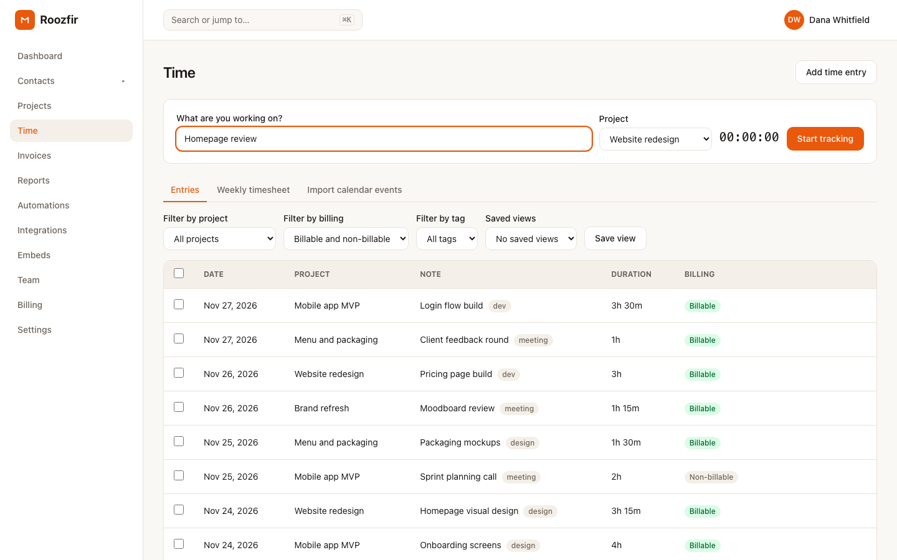
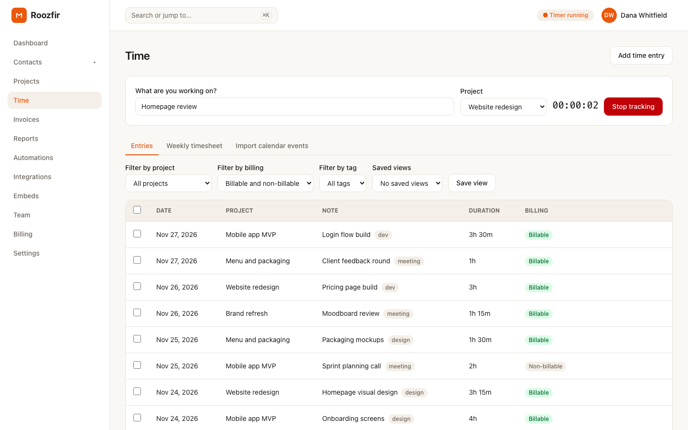
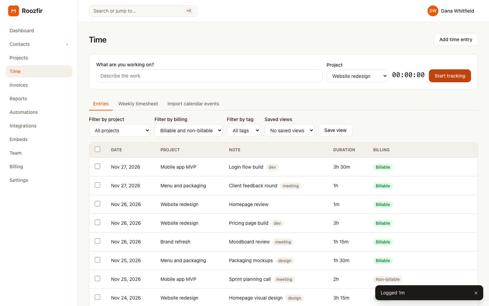

Help Center » Projects and time
How to start and stop the timer
The timer is the quickest way to log time while you work. It keeps running if you leave the page.
- Open Time in the left-hand menu.
- Under What are you working on? describe the work, then pick the Project.

The timer card with the description Homepage review and the project Website redesign selected - Click Start tracking. The clock starts counting and a "Timer running" label shows at the top of every page.

The timer card with the clock running - When you are done, click Stop tracking. A message tells you how much time was logged.
- Your new entry is at the top of the Entries list. Use the pencil icon on a row to change the duration or note.

The Time page after stopping the timer, with the new entry in the Entries list